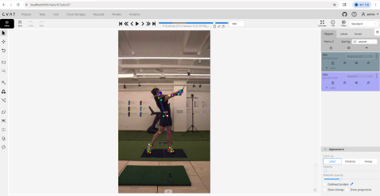
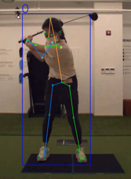
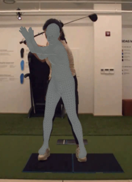
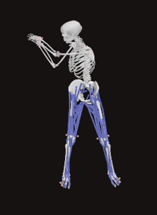
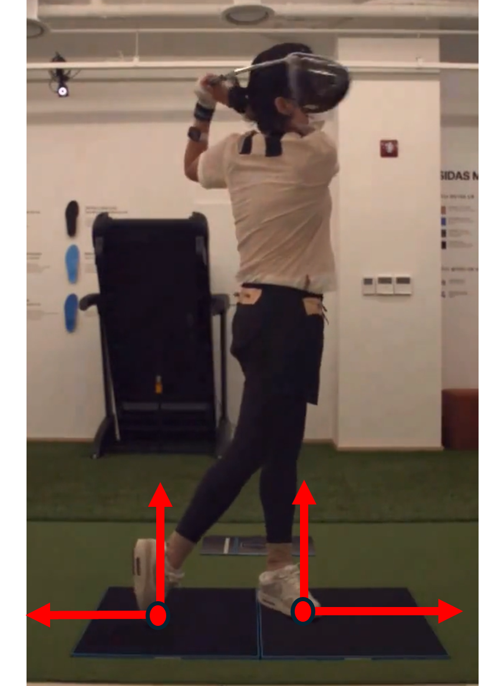

Project 2. Single View-Based 3D Analysis
Objective. 단일 정면 카메라 영상만으로 골프 스윙의 3D kinematics를 추출
Approach. Motion capture, force plate, IMU를 동시에 측정해 ground truth를 확보하고, golf-specific MMPose fine-tuning, SMPL reconstruction, optimization, OpenSim IK로 연결
Plan. Single View 에서 추출한 features 와 Ground Reaction Force (GRF) Mapping을 통한 GRF Estimation / IMU 기반의 골프 스윙 관련 Parameters 추정
Approach. Motion capture, force plate, IMU를 동시에 측정해 ground truth를 확보하고, golf-specific MMPose fine-tuning, SMPL reconstruction, optimization, OpenSim IK로 연결
Plan. Single View 에서 추출한 features 와 Ground Reaction Force (GRF) Mapping을 통한 GRF Estimation / IMU 기반의 골프 스윙 관련 Parameters 추정
Data Acquisition
Subjects
20
Pro 10 · Amateur 10
Trials / Subject
20
Driver 10 · Iron-7 10
Modalities
3
Mocap · Force Plate · IMU
Project 2 Visual Tabs





End-to-End Pipeline
01
Motion Capture Measurement
Mocap system, force plate, and IMU were measured simultaneously to obtain ground truth kinematics and GRF.
02
Front-View Golf Swing Dataset
Front-view swing images were collected and prepared for golf-specific model training.
03
Model Fine-Tuning
MMPose was fine-tuned on the golf swing dataset to improve keypoint accuracy.
04
2D Pose Estimation
The fine-tuned model extracts 2D keypoints from single-view video frames.
05
SMPL and Filtering
SMPL reconstructs 3D body motion, followed by temporal filtering for stable trajectories.
06
Optimization
Foot-ground contact constraints are used to reduce single-view reconstruction instability.
07
OpenSim Inverse Kinematics
Final 3D motion is converted into joint angle time-series for golf swing kinematic analysis.
Key Contribution
- Measured and organized a golf swing dataset with motion capture, force plate, and IMU ground truth.
- Built a golf-specific 2D pose estimation workflow through MMPose fine-tuning.
- Connected single-view 2D image input to 3D joint kinematics through SMPL, optimization, and OpenSim IK.
- Prepared the extension path toward GRF estimation using SMPL features and force plate validation.
Tech Stack
Python
OpenSim
MMPose
SMPL
Optimization
Motion Capture
Force Plate
IMU